<link rel="import" href="../../components/polymer/polymer.html">

<dom-module id="ss-casters">
	<template>
		<div id='casters' data-min-width='1920'>
			<style type='text/css' media='screen,print'>
				#casters {
					position: relative;
					overflow: hidden;
					width: 1920px;
					height: 1080px;
					font-family: arial, helvetica, sans-serif;
					margin: 0;
				}

				#image {
					display: block;
					width: 100% !important;
				}

				#commentator-left {
					position: absolute;
					top: 85.4%;
					left: 1.2869%;
					width: 25.8328%;
				}

				#commentator-right {
					position: absolute;
					top: 85.4%;
					right: 1%;
					width: 25.7382%;
				}

				.name {
					display: flex;
					/* Vertical center alignment */
					align-items: center;
					/* Horizontal center alignment */
					justify-content: center;
					font-size: 55px;
					line-height: 97px;
					color: #910a0a;
					text-align: center;
				}

			</style>
			

			<div id='commentator-left'>
				<span class='name'></span>
			</div>
			<div id='commentator-right'>
				<span class='name'></span>
			</div>
		</div>
	</template>

	<script src="ss-casters.js"></script>
</dom-module>
